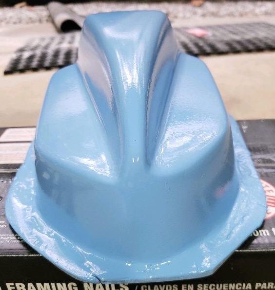

Why Cardian

Protect your vehicle. Stay up-to-date on your car's safety. Monitor activity from potential hazards.
Have you ever had your car broken into? Has your car ever been side-swept? Have you ever been involved in a hit-and-run? Do you worry about keeping your car safe while you are away? In a recent study, about 1 in 8 Americans have had their car broken into. Of that same study, more than half of participants had their car damaged while they were absent. It also found that about 1 in 5 people have been involved in a hit and run.
Our company has designed a new piece of technology to help drivers all across America feel more safe about their cars. Now, with our system, you are able to check into your car at any time. It also has a built in alarm system to dissuade intruders. Our app will notify you when any suspicious activity occurs. These features will help protect you and your car along with identify perpetrators.